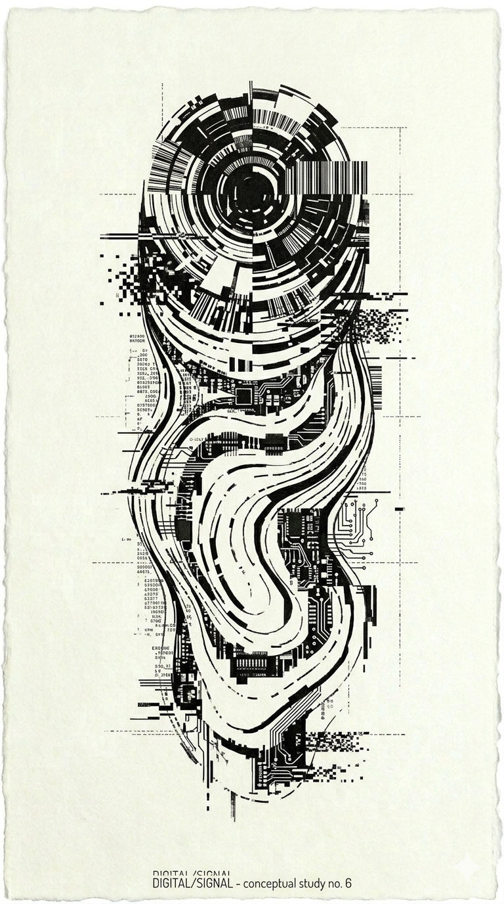
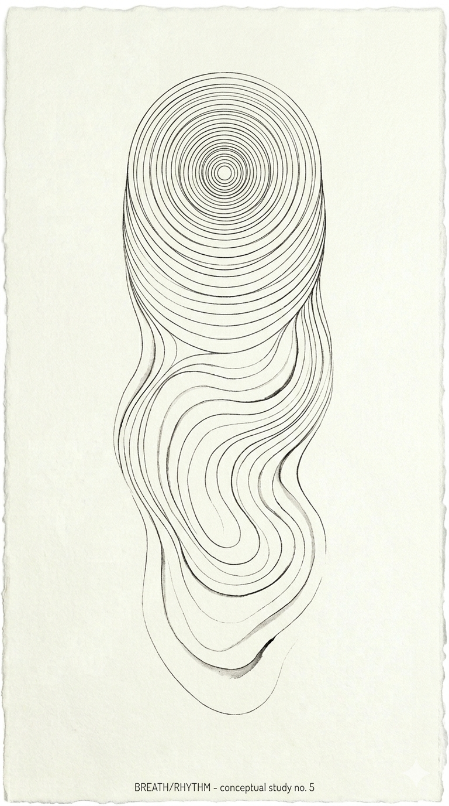
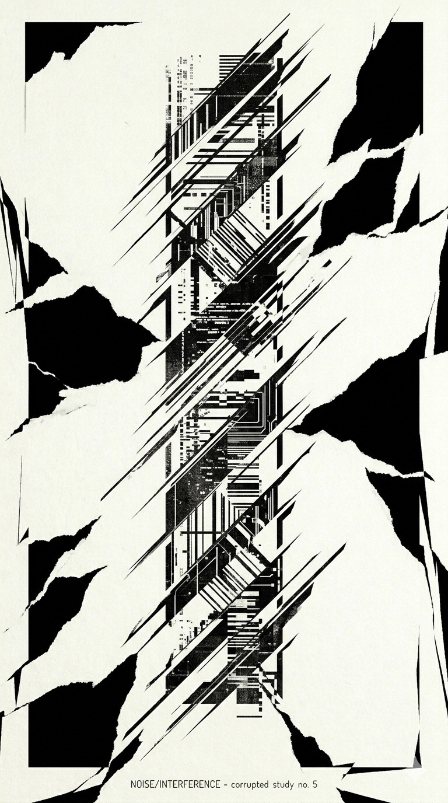
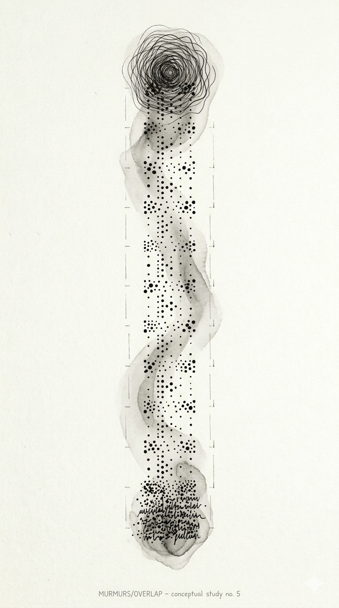
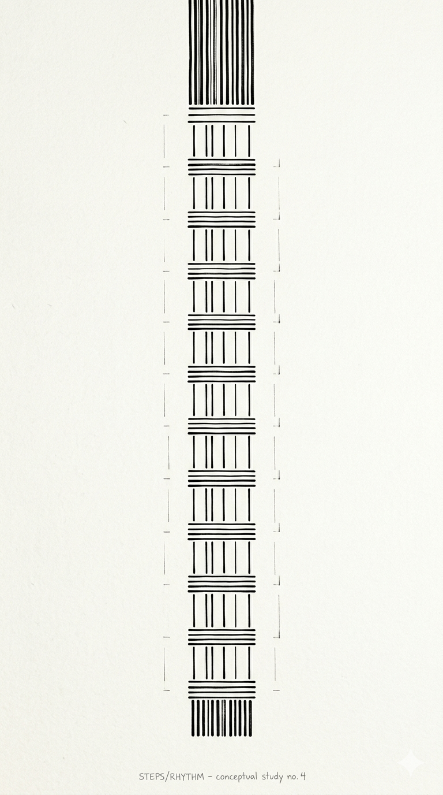
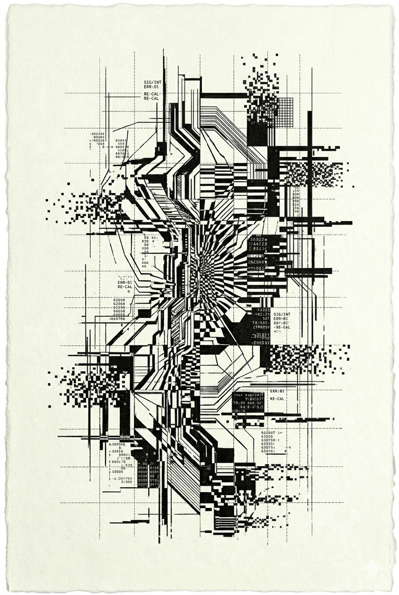

Clase 1
En este sonido se percibe algo más que una clase. Es la mezcla de voces, explicaciones que intentan guiarnos y el murmullo constante de quienes también están aprendiendo.
Ritmos repetitivos, voces simultáneas y estructuras compartidas.
Una colección de momentos que, aunque parecen simples, construyen la esencia de mi día a día.
Este archivo nace de detenerme a escuchar lo que normalmente ignoro. Sonidos que siempre han estado ahí, acompañando mis días, pero que solo cobran sentido cuando realmente presto atención.
Cada audio y cada video guarda un momento real: espacios que habito, emociones que atravieso y experiencias que, aunque cotidianas, tienen algo especial cuando se observan con intención.
En este sonido se percibe algo más que una clase. Es la mezcla de voces, explicaciones que intentan guiarnos y el murmullo constante de quienes también están aprendiendo.
Ritmos repetitivos, voces simultáneas y estructuras compartidas.
Cada palabra que se escucha aquí refleja paciencia, dedicación y repetición dentro del ambiente universitario.
Este audio captura la esencia de aprender: explicaciones, ruido de fondo y conversaciones simultáneas.
El perifoneo de la mazamorra paisa se vuelve parte del paisaje sonoro cotidiano de la ciudad.
Capas sonoras caóticas que conviven constantemente.
Carros, pájaros y movimiento urbano coexistiendo en un mismo espacio sonoro.
Taladros y golpes constantes que representan una ciudad en permanente cambio.
Un intento imperfecto pero auténtico de producir un sonido corporal.
Ondas cercanas, respiraciones y gestos involuntarios.
Diferentes ritmos y fuerzas dentro de un mismo gesto cotidiano.
Un sonido involuntario que también refleja estados físicos y emocionales.
El sonido constante de escribir y construir ideas digitalmente.
Sonidos mecánicos, digitales y repetitivos.
Clics pequeños que permiten interactuar con el entorno digital.
El inicio sonoro del computador y del espacio digital cotidiano.
Imágenes que detienen el tiempo y transforman momentos cotidianos en memoria visual.






Fragmentos visuales que acompañan los sonidos y expanden la experiencia del archivo cotidiano.
Cada sensación sonora fue traducida visualmente mediante patrones, ritmos y gradientes en CSS.
| Dibujo | Sensación sonora | Rasgo visual | Traducción CSS | Lugar en interfaz |
|---|---|---|---|---|
| Dibujo 1 | Sonido repetitivo de pasos | Líneas paralelas | repeating-linear-gradient() | Fondo de tarjeta |
| Dibujo 2 | Murmullo de voces | Puntos dispersos | radial-gradient() | Fondo de sección |
| Dibujo 3 | Ruido tecnológico | Cortes diagonales | linear-gradient() | Encabezado |
| Dibujo 4 | Respiración | Ondas suaves | repeating-radial-gradient() | Separador |
| Dibujo 5 | Eco lejano | Expansión gradual | radial-gradient() | Fondo general |
| Dibujo 6 | Interferencia digital | Fragmentos irregulares | linear-gradient() | Bordes y detalles |
Describe qué sensación, recuerdo o emoción te produjo este archivo sonoro.